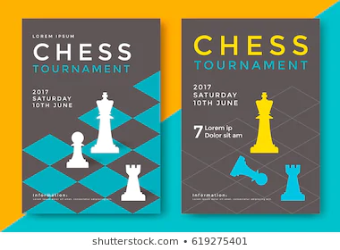
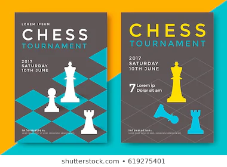

“Though the pawns of chess may appear indispensable, without pawns then chess would be a rainbow with only two shades, black and white.” Cliffon A. Pryce
Cliffon Pryce is the founder of The NCU Chess club he is an extraordinary individual who saw the importance and value of... chess at a very young age. He started playing in high school from a fellow school mate then quickly dominated his peers and became the coach for his high school. He then went on to becoming an official coach where he taught in numerous high schools, primary schools, and private lessons. He is a selfless person who has generously given his time in an effort to share how valuable chess is to everyday life.

The chess club usually hosts in-house tornaments as well as play againt other departments on the campus as well as attend external tornaments.
The Computer Information Chess Club was founded by Cliffon A. Pryce in September 2019. This club is apart of The CHIPS Club and is only available to the members of the CIS department. The club has been growing tremendously since it has started and we are delighted and determine to produce the best experience possible to all our members.
Read more about us
 
